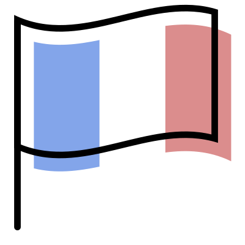
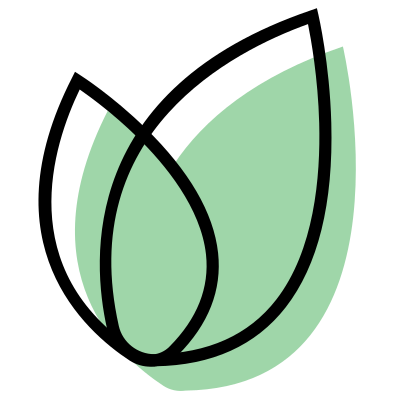

La Créatrice
Pollenni Hin-Nguyen
Attirée dès le lycée par le métier de styliste, Pollenni Hin-Nguyen poursuit ses études à l’Ecole Supérieur des Arts et des Techniques de la Mode (ESMOD) à Paris, après une expérience forte de six ans dans le milieu du textile spécialisé pour l’enfant, elle décide de lancer sa propre société ‘Douce de Po’ à Noisy le Grand. Elle tient à partager son univers avec toutes les mamans qui comme elle, vouent une vraie passion pour les produits uniques, fabriqués avec amour et remplis de délicatesse.
L'entreprise

En 2012 suite à une envie de développer sa propre activité et poussée par la naissance de son fils, Pollenni Hin-Nguyen fonde ‘Douce de Po’ avec l’objectif de créer des accessoires textiles pour bébé, enfant et femme. Reconnue pour la qualité de son travail, elle a su s’imposer dans le domaine de la puériculture.
Les produits

Tous nos produits sont produits en France par une main d’oeuvre artisanale de qualité

Nos produits respectent l’environnement afin de garantir un bel avenir à nos enfants adorés
Fabriqués à la main, nos produits conçus avec amour afin de répondre au besoin des bébés
Les créations ‘Douce de Po’ sont entièrement “made in France”, créées dans des matières douces et respectueuses de l’environnement, les matières premières sont issues de l’artisanat français. Douce de Po accorde une grande importance à la qualité de ses produits, notamment dans le choix de ses tissus (imprimés de qualité et fibres naturelles) et dans l’originalité de ses ensembles. Chaque collection se veut unique et les produits réalisés en petites séries. Les produits sont longuement étudiés dans un souci de combiner les plus belles matières et les plus beaux coloris. L’enfant qui reçoit un produit Douce de Po, est un enfant à qui on veut offrir une attention particulière et une complicité avec ses parents.